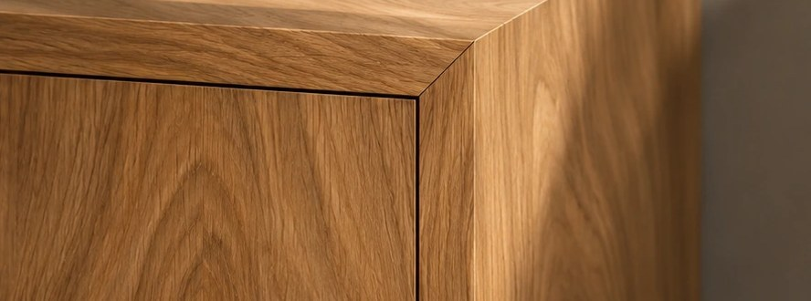
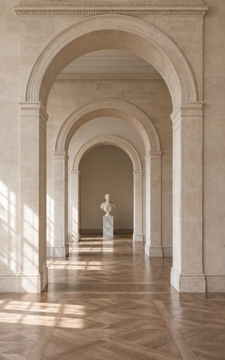
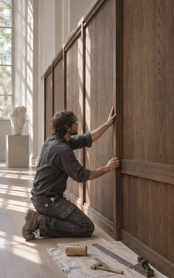
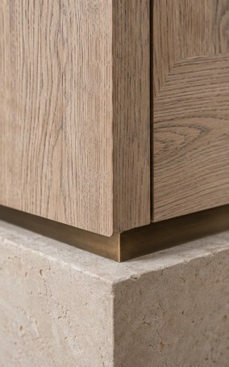
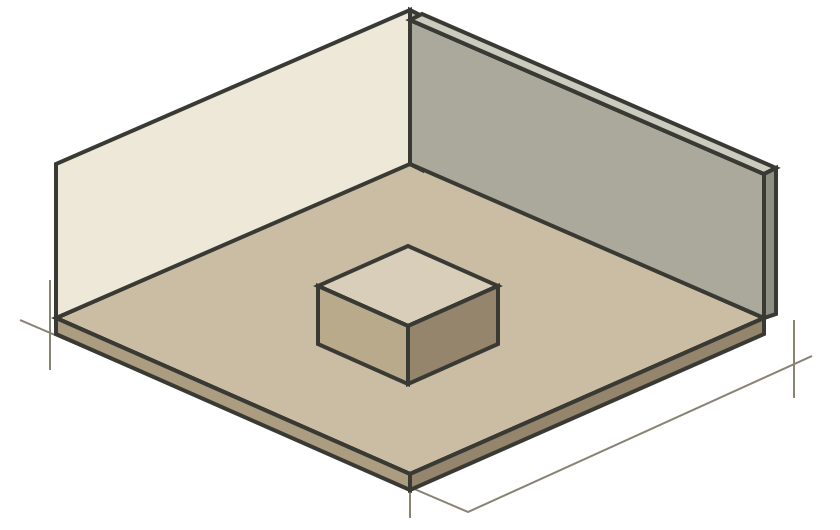

Van de indeling van een woning tot de aansluiting tussen hout, steen en stucwerk. Voor Soesman Bouw zit kwaliteit in de afwerking.
Elke klus begint op papier. Beweeg over de tekentafel en zie de plattegrond ontstaan — klap hem daarna open en trek een la open voor elk vak.
Indeling en looproutes. Een verbouwing begint bij het dagelijks gebruik. Waar komt u binnen met boodschappen? Welke deur staat steeds in de weg? Op de plattegrond leggen we de bestaande situatie naast de gewenste indeling.
Ook de volgorde van het werk komt op tafel. Bespreek welke ruimtes bereikbaar moeten blijven, waar materialen binnenkomen en welke keuzes vóór de start vast moeten liggen.
Steen en voeg. Bij een nieuwe muur of een plaatselijk herstel bepalen steenformaat, metselverband en voeg samen het aanzicht. Vooral naast bestaand werk valt het op als een horizontale voeg nét op een andere hoogte loopt.
Een proefvlak maakt de keuze tastbaar. Bekijk steen en voeg buiten in daglicht en let ook op de aansluiting rond een hoek, kozijn of dorpel.
Kastindeling. Hoeveel ruimte vraagt wat u wilt opbergen? Bespreek de vakverdeling, de diepte en de manier waarop de kast aansluit op vloer en plafond.
Denk ook aan wat achter de deuren verdwijnt. Een stopcontact, leiding of scheve hoek bepaalt soms precies waar een kastvak eindigt.
Verdeling en snijlijnen. Een rustig tegelvlak begint met de verdeling. Vanuit de zichtlijn bij de deur bekijken we waar de voegen lopen en hoe breed de laatste rij langs de wand wordt. Zo zijn de snijstukken vooraf in beeld.
Bij een nis, buitenhoek of overgang naar een houten vloer komen meerdere lijnen samen. Leg tegel, voegkleur en randafwerking naast elkaar om te zien hoe dat detail uitpakt.
Ondergrond en afwerking. Langs een raam laat strijklicht iedere overgang zien. Daarom begint het gesprek bij de ondergrond en de gewenste uitstraling. Wilt u een glad wandvlak of juist een fijne structuur waarin het licht zachter valt?
Ook de randen maken verschil. Bespreek vooraf hoe het stucwerk eindigt bij de plint, een kozijn of een houten paneel. Een materiaalstaal helpt om kleur en structuur in de ruimte te beoordelen.
Deur in de wand. Een vlakke deur begint bij de verdeling van de wand. Bekijk samen hoe de naden, de houtnerf en de doorgang op elkaar aansluiten.
Door het patroon vooraf over wand en deur te verdelen, blijft de doorgang onderdeel van het grotere vlak. Bekijk het resultaat ook eens vanaf de andere kant van de ruimte.
Verstek in eiken. Op een buitenhoek komen twee zaagvlakken samen. Kies waar de nerf doorloopt en hoe scherp of zacht de afgewerkte rand mag aanvoelen.
Bij het uitzoeken van het hout kunt u twee delen naast elkaar houden. Dan ziet u direct of de kleur en de richting van de nerf bij de hoek passen.

Bij een verstekhoek ontmoeten twee schuine zaagsneden elkaar. Door de tekening van het eikenhout vooraf uit te lijnen, loopt de nerf van het ene vlak door in het andere.
We beginnen met kijken en meten. Hoe loopt de vloer? Waar raakt nieuw hout aan bestaand steen? Die aansluitingen bepalen we al vóór de eerste zaagsnede.



Bekijk hoe de ruimte vorm krijgt. De vloer bepaalt de basis, de wanden geven richting en het laatste element maakt de verhoudingen zichtbaar.

BouwschetsEen plattegrond en enkele foto’s vormen een goed vertrekpunt voor het eerste gesprek.